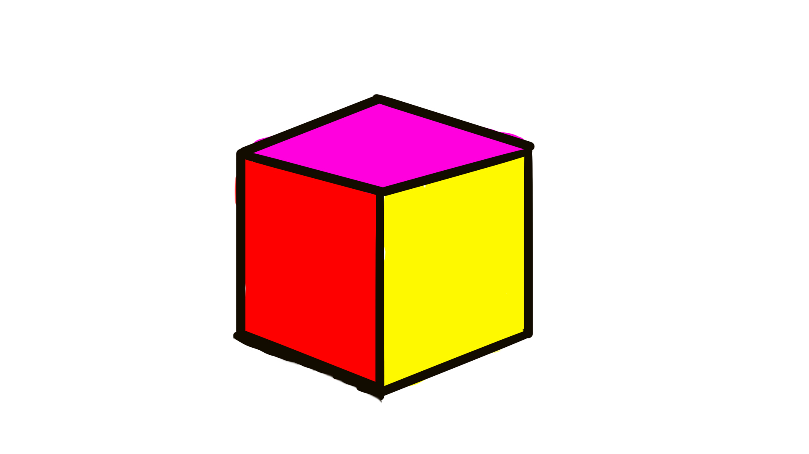

Cube ON

A single-player puzzle platformer built around colour matching and environmental traversal.
Solo Project • Unity
About the Game
Cube ON is a single-player puzzle platformer developed independently using Unity.
Players take control of a cube and must navigate through a series of levels by matching their cube's colour with different coloured terrain.
Starting as a red cube, players acquire different colours as they progress, allowing them to traverse the corresponding terrain and overcome environmental obstacles.
The objective of each level is to reach the green end-zone block.
My Role
Cube ON was developed as a solo project, giving me responsibility for the game's design and development in Unity.
Game Design
Designed the game's colour-matching puzzle mechanics, connecting the player's current colour with the terrain they can traverse.
Gameplay Development
Developed the game independently using Unity, bringing together player movement, colour-based gameplay, and level progression.
Independent Development
Managed the project as a solo developer, taking the game from its initial concept to a playable build.
Core Gameplay
The central challenge of Cube ON is understanding how the cube's current colour interacts with the surrounding terrain.
Start as Red
Begin each level as a red cube and explore the environment.
Acquire Colours
Take on different colours to navigate the level's varied terrain.
Solve the Puzzle
Use the colour-matching mechanic to plan a route through the level.
Reach the End Zone
Navigate to the green end-zone block to complete the level.
Gameplay Demo
Watch the Cube ON gameplay demonstration to see its colour-matching and puzzle platforming mechanics in action.
Controls
Cube ON uses simple keyboard controls for movement and level restarting.
Project Details
Play Cube ON
Download Cube ON from itch.io or watch the gameplay demonstration on Vimeo.